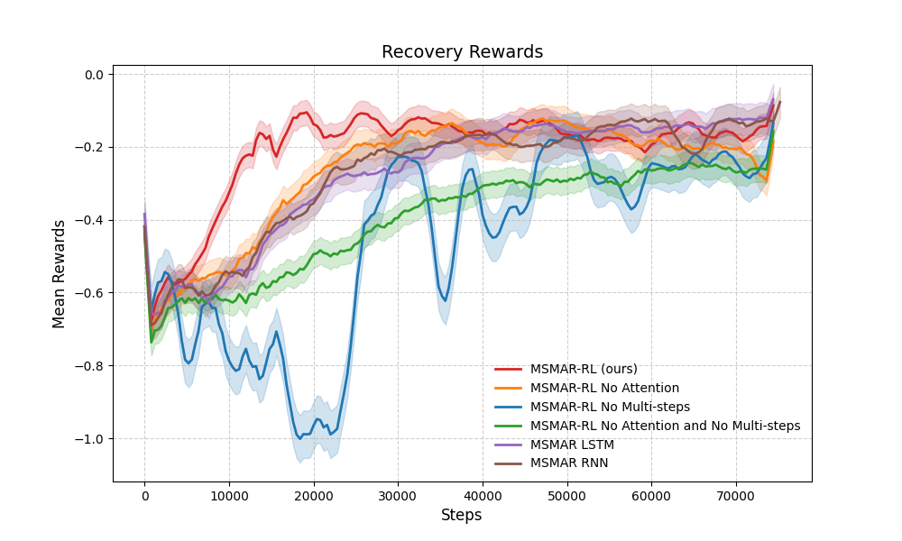
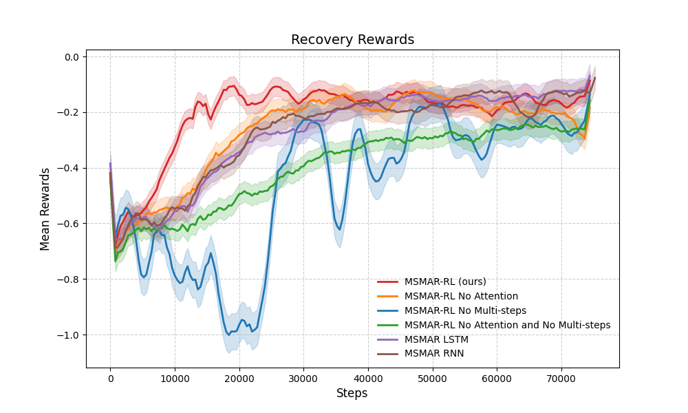

MSMAR-RL: Multi-Step Masked-Attention Recovery Reinforcement Learning for Safe Maneuver Decision in High-Speed Pursuit-Evasion Game
- 1School of Artificial Intelligence, OPtics and ElectroNics (iOPEN), Northwestern Polytechnical University, Xi’an 710072, P. R. China,
- 2Institute of Artificial Intelligence (TeleAI), China Telecom, P. R. China,
- *Indicates Equal Contribution
IJCAI 2025
-
 Paper
Paper
-
 Code
Code
Abstract
Ensuring the safety of high-speed agent in dynamic adversarial environments, such as pursuit-evasion games with target-purchase and obstacle-avoidance, is a significant challenge. Existing reinforcement learning methods often fail to balance safety and reward under strict safety constraints and diverse environmental conditions. To address these limitations, this paper proposes a novel zero-constraint-violation recovery RL framework tailored for high-speed uav pursuit-evasion combat games. The framework includes three key innovations. (1) An extendable multi-step reach-avoid theory: we provide a zero-constraint-violation safety guarantee for multi-strategy reinforcement learning and enabling early danger detection in high speed game. (2) A masked-attention recovery strategy: we introduce a padding-mask attention architecture to handle spatiotemporal variations in dynamic obstacles with varying threat levels. (3) Experimental validation: we validate the framework in obstacle-rich pursuit-evasion scenarios, demonstrating its superiority through comparison with other algorithm and ablation studies. Our approach also shows potential for extension to other rapid-motion tasks and more complex hazardous scenarios.
Framework of MSMAR-RL
The overview of our system framework is shown in Figure. The basic structure is recovery reinforcement learning architecture, which contains one safe critic discriminator and two policy structure. The safe critic is used to judge the safe condition of the near states, with a multi-step reach avoid value learned by the agent. The two policy are responsible for selecting actions for maximum reward or keeping in safe states.
When the agent get observation from the environment, firstly, the safety discriminator determine the current state (safe or unsafe) using a state-safe value. Based on the value, the UAV selects either the target policy (for task completion) or the recovery policy (for avoiding entering a dangerous state) and interacts with the environment. After the interaction, the UAV receives new observations, and the process repeats, forming a closed-loop control that ensures both safety and task efficiency in dynamic environments.
Results
Performance Test
Our experiments were conducted in two kinds of environments, including spherical obstacles and cylinder obstacles, shown in green.
(a) The agent uses only pursuit policy. It could tail the target uav without avoiding obstacles. (b) The agent uses our MSMAR-RL method and carefully avoids all the obstacles while chasing the target uav. (c) The agent uses pursuit policy only. It could tail the target uav without avoiding the cylindrical obstacles. (d) The agent uses our MSMAR-RL method and greatly avoids all the cylindrical obstacles while chasing the target uav.
Pursuit_only
MSMAR-RL
Pursuit_only
MSMAR-RL
Ablation Experiment
The ablation experiment compares the function of attention module and multi-steps module. Besides, we replace the attention module with rnn and lstm to test the mechanism of attention.
Compared to the method without attention, MSMAR-RL has higher convergence rate than that without attention mechanism(red curve and orange curve). However, without a correct safe discriminator, the attention module would lead to a concussion in training process. This may occur because that the attention module provide better learning ability to the agent, but each exploration would lead to a danger state caused by the maneuverability limitation of the agent. Having using the multi-step, the concussion is much less, which demonstrate the greatness of the multi-step safe discriminator.
 

Dangerous Counts
Recovery Rewards
Bibtex
Acknowledgements